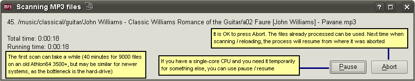

|
Hosted by SF
|

Each MP3 file in the specified directories is looked at and analyzed for errors. This step can take a long time for large MP3 collections (40 minutes for 9300 files on my ancient Athlon64 3500+), so, if you just want to see what MP3 Diags does, it's better to start on a small set of files. (Another option is to abort the scanning soon after it starts. You'll be able to see whatever files were scanned already.) The results are stored in a data file, so the next time you start the program you'll still see the parts of your MP3 files and what errors they have, but you won't have to wait for the whole collection to be scanned again. (Well, if your collection is significantly bigger than 10000 files, even loading data from this file can get annoyingly slow.)